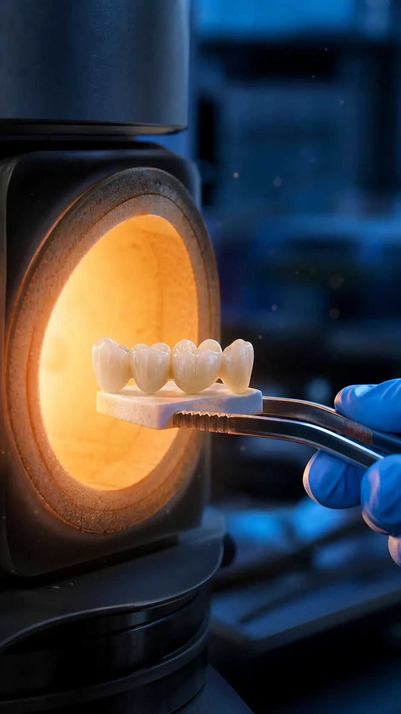
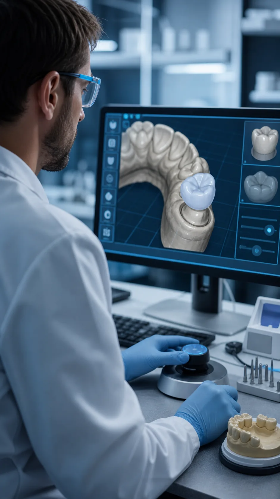

Название и компоненты.

Вид работы 03 · предварительно
Работы на имплантатах
Точный перечень систем, компонентов и доступных конструкций должен быть подтверждён лабораторией.
Обсудить задачуРезультат услуги
Совместимое решение с контролем каждого этапа
Здесь будет точный перечень конструкций, компонентов, ограничений и форматов взаимодействия с врачом.
СистемыПеречень уточняетсяСрокПосле оценки случаяКонтрольПо согласованным точкамСтоимостьПосле выбора компонентов
Что предоставить
Данные и компоненты
Требования к точности уточняются.
План и ограничения случая.
Этап лечения и желаемая дата.
Процесс
Совместная работа врача и техника
- 01Проверка совместимости
- 02Согласование конструкции
- 03Моделирование
- 04Производство
- 05Контроль
- 06Передача результата

Пример работы
Кейс с контрольными точками
Исходные данные, выбор компонентов, согласование и готовая работа.
Другие лабораторные кейсы →Обсуждение задачи